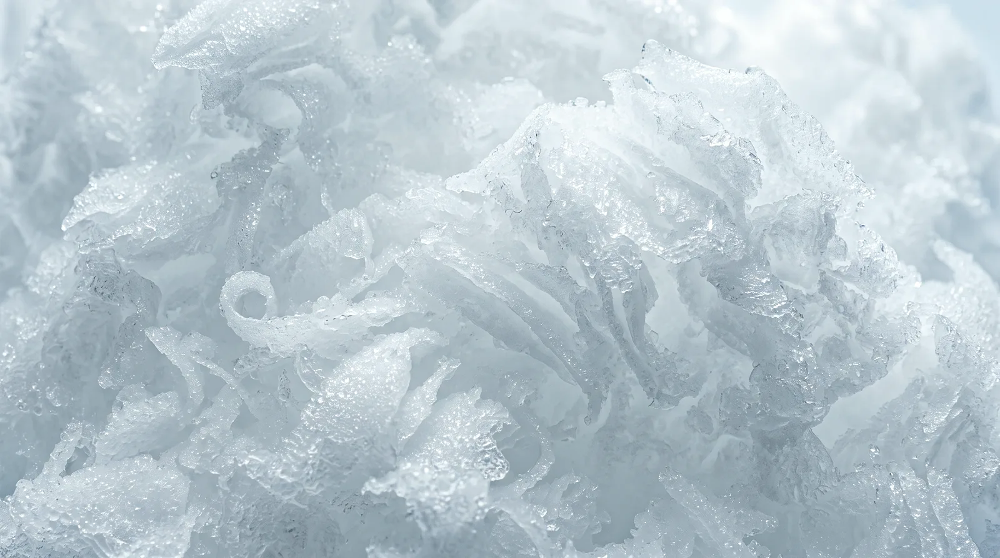

Steel, not wax
Every ice is served in a footed steel bowl that spent the night in the freezer. No cups, no lids, nothing to carry away except the bottles — snow doesn't do souvenirs.
The house
Anyone can freeze water. Making snow on the equator — snow that holds a peak, drinks a syrup, and disappears on the tongue without a single crunch — takes two days, one blade, and a kitchen that argues about pandan. This is how it works.

01° · The block
Fast ice is cloudy ice — air trapped mid-panic. Ours freezes for forty-eight hours in small tanks, from the outside in, pushing every bubble out of the way. What's left is clear, dense and quiet under the blade.
Milk blocks for the milk-snows, coconut blocks for the dairy-free peaks, water blocks for granita. Each one weighs as much as a well-fed cat and gets exactly one shift of glory.

02° · The blade
Too cold and the ice chips; too warm and it weeps. At −4° the block comes off the blade in ribbons you can read through — closer to weather than to dessert. We tune the blade by ear, twice a day, and the room goes quiet when it's right.
This is also why your chit has a start time. Snow can't sit at the pass; it's shaved onto your bowl, sauced, and called in under two minutes.

03° · The syrup kitchen
Gula melaka smoked in Melaka, pandan pressed the same morning it's cut, roses that survived the trip and calamansi that didn't have far to come. The kitchen cooks in small pots and bottles what the day doesn't drink.
04° · Berdua
Every ice comes solo or berdua — a wider bowl, a taller peak, and a race you run together. The house position is that a shared ice tastes better, melts slower per person, and settles most arguments.
05° · The room
Every ice is served in a footed steel bowl that spent the night in the freezer. No cups, no lids, nothing to carry away except the bottles — snow doesn't do souvenirs.
The spoon drawer is refrigerated. It's a small thing. It is also, regulars tell us, the whole point.
A timer goes on the tray when your ice lands. Nothing happens when it runs out — it's just the house reminding you whose side time is on.